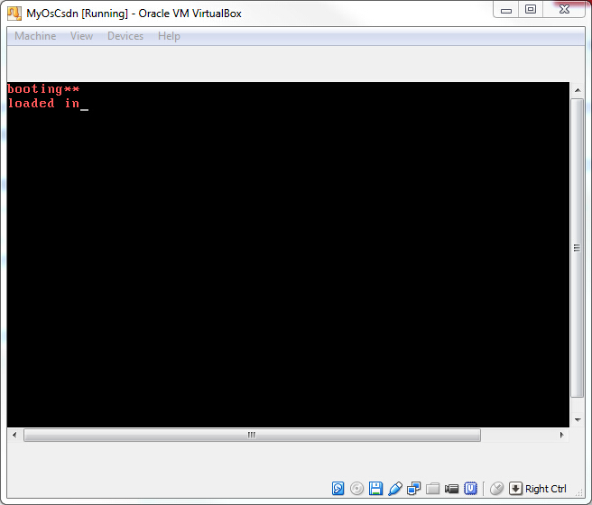
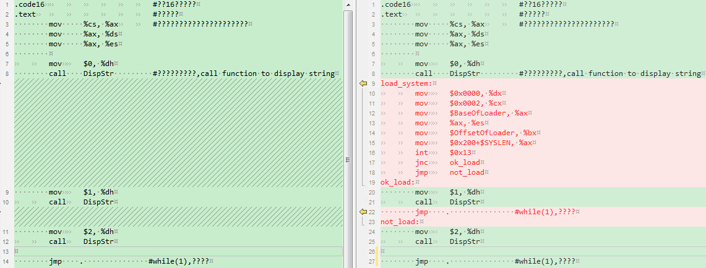
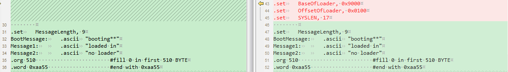

背景： 硬件在加电自举时，会自动加载第一个扇区到内存，并从这个扇区的第一个字节开始执行。 因此我们只要把需要执行的代码放到第一个扇区，再打开电源，最简单的操作系统就运行起来了。 可是，硬件只帮我们加载第一个扇区，仅仅512字节。 我们的操作系统现在还很小，但它会慢慢长大，超出512字节的限制也是迟早的事。 也就是说，有一部分代码会放到软盘的其它几个扇区。 要执行其它扇区的代码，就把像处理第一个扇区一样，把其它扇区也加载到内存，并让控制权跳转到指定的位置。 很遗憾，这些我们要自己去实现。今天先讲第一步，加载扇区。
需求： 加载第2-18个扇区的内容到内存的0x9000:0x0100处。 利用（2.多一些打印）中的方法，有选择地打印： 加载之前打印“loading**” 如果加载成功，打印”loaded in” 如果加载失败，打印”no loader”
效果： 
说明： （1）为什么基址是0x9000？ 因此所参考的0.12内核源码和《自己动手写操作系统》中用的都是这个地址，所以也沿用了这个地址。 （2）为什么偏移是0x0100？ 这与下一节要讲的内容相关，将在下一节中解释。 （3）真实的物理地址是多少？ 在实模式下，物理地址=段地址<<4+段偏移。 因此物理地址为0x90100
修改展示：  此处省略N行 
代码说明：
load_system:
只是一个标签，用于跳转或者阅读方便。
mov {% math_inline %}0x0000, %dx
mov {% endmath_inline %}0x0002, %cx
mov {% math_inline %}BaseOfLoader, %ax
mov %ax, %es
mov {% endmath_inline %}OffsetOfLoader, %bx
mov {% math_inline %}0x200+{% endmath_inline %}SYSLEN, %ax
int {% math_inline %}0x13
调用了BIOS提供的0x13号中断。该中断的作用是读入数据到内存。 只要按照该中断的格式初始化寄存器，就可以读入指定区域的数据到内存的指定位置。 参数： AH 02，功能号 AL 读取扇区数 = 17 CH 柱面 = 扇区号 / 36 = 0 CL 扇区 = 扇区号 % 18 = 2 DH 磁头 = （扇区号 % 36） / 18 = 0 DL 驱动器（0x0 ~ 0x7f表示软盘，0x80 ~ 0xff表示硬盘） ES：BX 缓冲区地址，即数据读到这里 返回值： CF = 0表示操作成功，此时AH=0，AL=传输的扇区数 CF = 1即carry位置位（可用JC表示跳转）表示操作失败， AH=状态代码
int {% endmath_inline %}0x13
jnc ok_load
jmp not_load
根据上文可知，int 0x13是否执行成功，可以通过carry得知。 汇编指令JC和JNC就是针对carry的值来决定是否跳转的操作。 如果成功，跳转到ok_load，否则跳转到not _load ok_load和not _load的操作分别是打印各自的字符串。